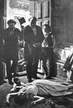

|
|  |
|
Juan Manuel Blanes, Un episodio de la fiebre amarilla
|
Yet the lower-class body also constituted a potential threat, one that, towards the end of the century was increasingly verbalised and pictured not so much in cultural ('barbarism') as in medical terms, as a potential source of contagion. City planners in Rio, Santiago and Buenos Aires joined forces with medical doctors and psychiatrists to root out what was seen as the causes of epidemic diseases and socio-political deviance: the urban popular quarters, with their insalubrious and morally licentious living conditions and sociability. The Uruguayan painter Juan Manuel Blanes´s 'Episode of the Yellow Fever Epidemic' –a painting that was visited by mass audiences on its first exhibition at the Teatro Colón in 1872– presents an interesting view of the fears and desires mobilised by the popular body: the scene depicts a dead female, her baby still clutching at her breast, in a dark interior, the light streaming in through the doors opened by physicians Manuel Argerich and Roque Pérez, members of the urban elite who have come to save the poor, fearlessly putting their own lifes at risk.
|